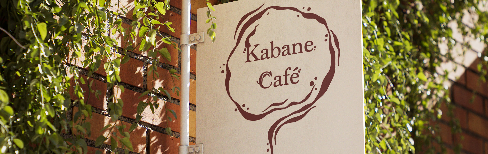
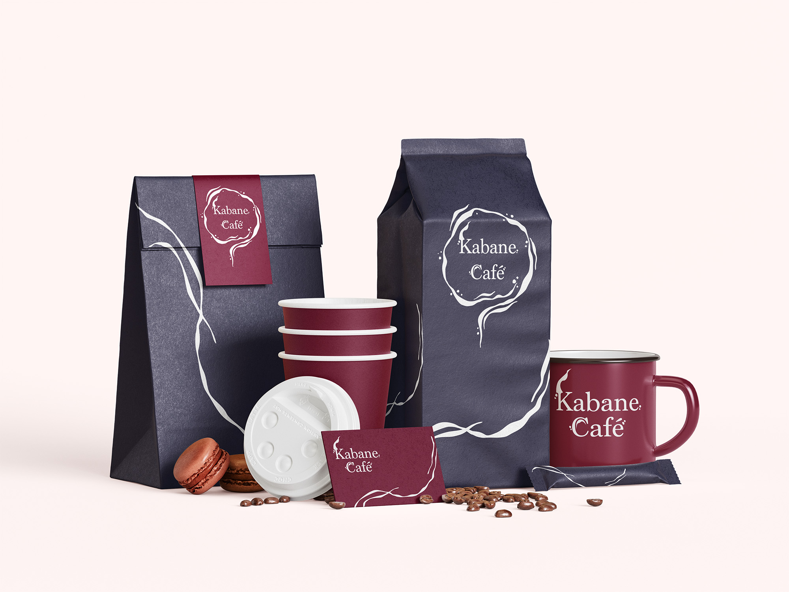

Kabane Café
Projet d’identité visuelle pour un café parisien. L’objectif était de présenter le café comme une expérience riche et complexe. Un produit de luxe et de qualité qui fait voyager.
J’ai pris la décision de me focaliser sur les saveurs et mouvement du café qui nous enrobe et se propage. Le café devient un lieu prestigieux proposant un produit de qualité tout en évoquant des codes chaleureux et conviviaux qui apaisent.

Project "Kabane Café" - 2025